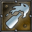

| Wartime Mechanic |
 |
| Type: | Worker Unit
Combat Unit
|
| Creation: | Produced by Military Camp
|
| Total Cost: |  100 100  50 50  1 1
|
| Production Time: | 80 |
| Maximum Hitpoints: | 500 |
| Regeneration of Hitpoints: | 1 |
| Armor-Strength: | 15 |
| Armor-Type: | Metal |
| Sight-Range: | 13 |
| 'Wartime Mechanic' is able to Build: | Eagle Pillar
Guard Tower
|
| Needed to build 'Wartime Mechanic': | Training Camp
Blacksmith Shop
|
| Movement Type: | Ground Unit |
| Move Command: Move | Speed: 170 |
| Morph Skill: Build Catapult | Morphing to: Catapult
Refund (Discount): 40 %
Morph Speed: 450
|
| Morph Skill: Build Br | Morphing to: Battering Ram
Refund (Discount): 20 %
Morph Speed: 450
|
| Morph Skill: Build Ballista | Morphing to: Ballista
Refund (Discount): 20 %
Morph Speed: 450
|
Attack Command: Hot Oil
 |
Target: Only ground units
Strength: 200+-175
Range: 6
Splash-Radius: 1
Splash also damages own units!
Type: Energy
Attack Speed: 35
Start Time: 0.5
This Attack Skill is used on "Hold Position"
|
| Upgrades Available: | Sign Of Mars (Sight: +1,
Attack Strength: +10,
Armor: +10,
Move: +8)
|
| Repair/Heal Skill: Repair | Repairing: Eagle Pillar, Colosseum, Training Camp, Blacksmith Shop, Temple, Military Camp, Guard Tower, Gladiator School
Repair/Heal Speed: 200
|
| Repair/Heal Skill: Heal | Healing: Slave, Spearman, Archer, Swordsman, Cavalry, Tribune, Turtle Formation, General, Wartime Mechanic, Fire Archer, Gladiator, Guard, Battering Ram, Axe Man, Catapult, Ballista
Repair/Heal Speed: 200
|